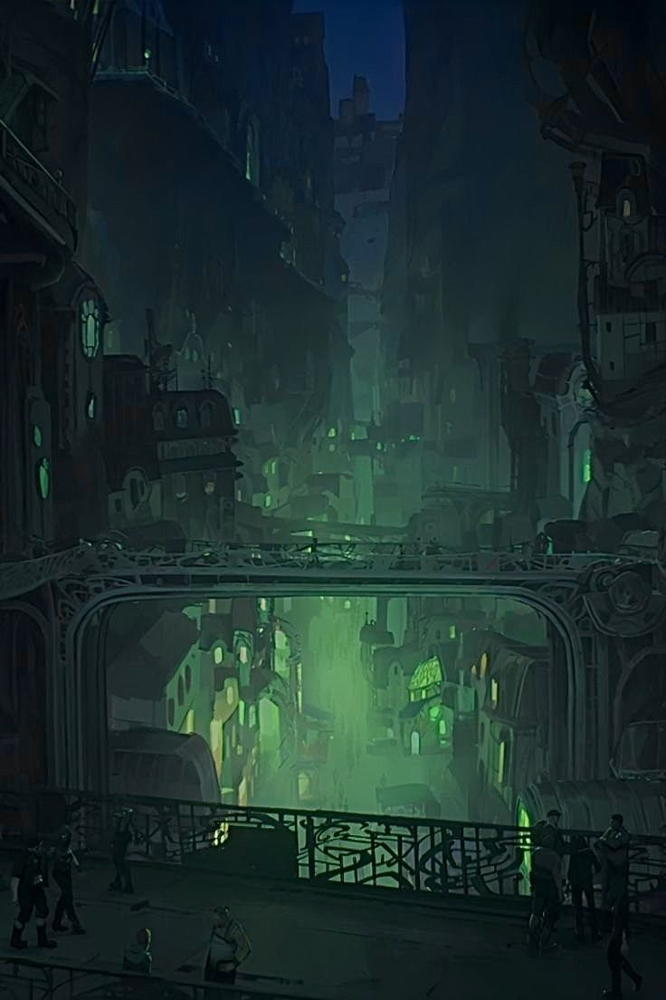
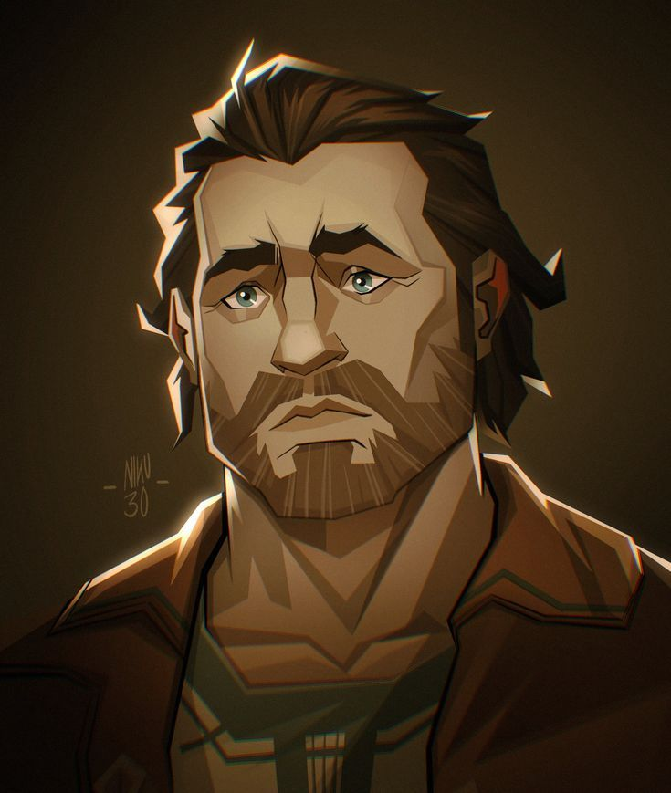
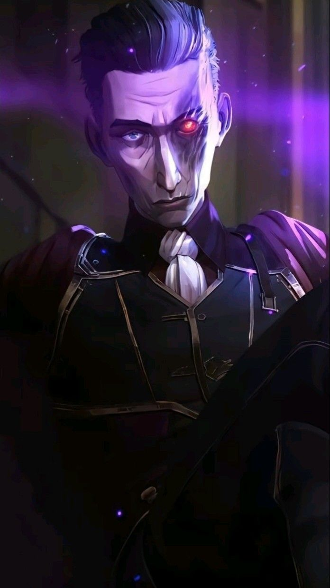
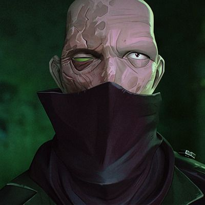
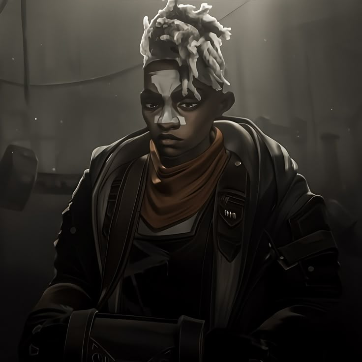
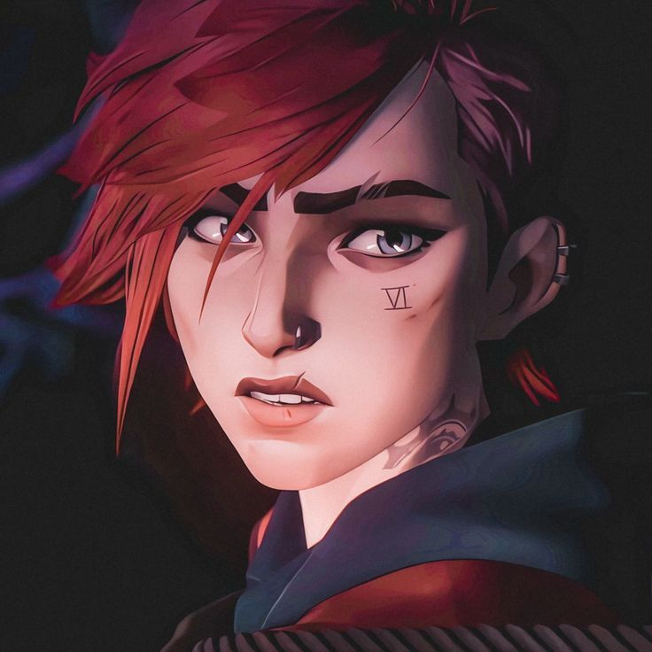
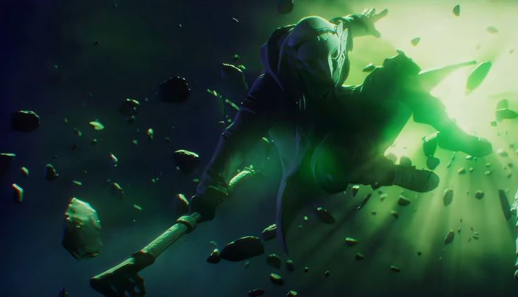
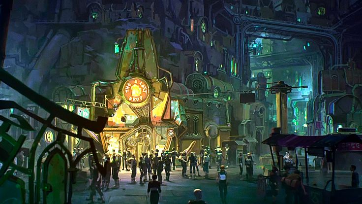
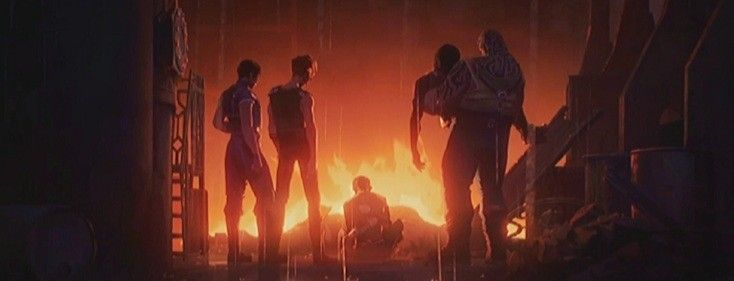

Beneath the shining skyline of Piltover lies Zaun, an industrial city forged from smoke, steel, and survival. Once part of the same city, Zaun became separated by decades of inequality, leaving its people to endure polluted air, hazardous factories, and a life defined by hardship rather than opportunity. Despite its reputation, Zaun is more than the undercity. It is a place where resilience thrives, where communities endure, and where necessity often gives rise to remarkable ingenuity.
Life in Zaun is shaped by contrasts. Inventors and laborers work beside chem-barons and smugglers, while children grow up learning that survival often depends on strength, loyalty, and sacrifice. The discovery of Shimmer, a powerful and dangerous substance capable of enhancing both body and mind, transforms the city, offering hope to some while deepening suffering for many others. As rival factions compete for influence, Zaun becomes a battleground where ideals, desperation, and ambition collide.
For generations, Zaun has lived beneath the shadow of Piltover, supplying its industry while receiving little of its prosperity. This imbalance fuels a growing desire for independence and recognition, inspiring figures who believe the undercity deserves to determine its own future. Throughout Arcane, Zaun is portrayed not simply as a place of conflict, but as a city filled with ordinary people striving to build meaningful lives despite overwhelming odds. It stands as a symbol of resilience, identity, and the enduring hope that even the darkest places can shape the future.
Notable Figures

vander
zaun leader
A respected leader of the Lanes, Vander sought peace after the failed uprising against Piltover. His guidance shaped an entire generation of Zaunites.
"A leader carries the weight so others don't have to."
silco
Revolutionary Leader
Driven by the dream of an independent Zaun, Silco transformed the undercity through ambition, influence, and uncompromising resolve. His vision inspired loyalty, fear, and a movement that forever changed Zaun's destiny.
"Power, real power, doesn’t come to those who were born strongest, or fastest, or smartest. No. It comes to those who will do anything to achieve it."
singed
zaun Chemist
A brilliant scientist driven by an endless pursuit of knowledge, Singed pushes the boundaries of science without regard for morality. His experiments reshape lives, alter history, and leave consequences that neither city can escape.
"Nature has made us intolerant to change, but fortunately, we have the capacity to change our nature."
ekko
leader of the Firelights
A gifted inventor and the founder of the Firelights, Ekko fights to protect Zaun from those who exploit it. Even in the darkest moments, he refuses to abandon the belief that the undercity can build a better future.
"It’s not enough to give people what they need to survive, you have to give them what they need to live."
violet
zaun Enforcer
Raised in the Lanes, Vi became a fearless fighter whose loyalty to her family and friends never faltered. Her determination to protect those she loves places her at the heart of the conflict between Zaun and Piltover.
"What makes you different makes you strong."
jinx
zaun Inventor
Once known as Powder, Jinx is a brilliant inventor whose life is shaped by loss, isolation, and fractured memories. Her unpredictable nature and extraordinary talent leave an irreversible mark on the future of both cities.
"Nothing ever stays dead."Shimmer
Fire Lights

The Last Drop

The Rebellion
